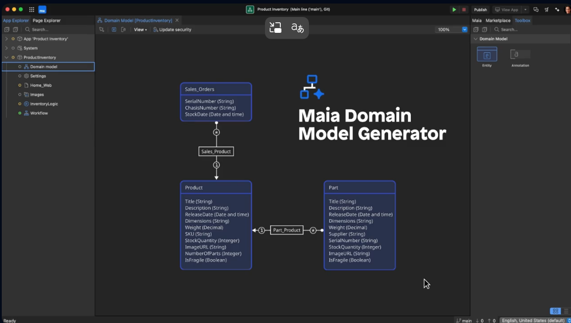

Plataforma de desarrollo de aplicaciones low-code
Mendix es una plataforma de desarrollo de aplicaciones low-code que permite a los usuarios crear aplicaciones empresariales de manera rápida y eficiente, utilizando una interfaz visual. Esta plataforma facilita la creación y mejora continua de aplicaciones móviles y web personalizadas, haciendo que el desarrollo de aplicaciones sea más accesible para todo tipo de usuarios. Además, Mendix es parte de Siemens, lo que refuerza su posición en el mercado de soluciones empresariales.
Imagen de referencia de una pantalla de Mendix
Low-code es una metodología de desarrollo de software que permite crear aplicaciones con mínima programación manual. En lugar de escribir líneas de código, se utilizan interfaces visuales, componentes predefinidos y funciones de arrastrar y soltar para construir soluciones tecnológicas de forma rápida y accesible.
Mendix es una plataforma low-code que permite desarrollar aplicaciones rápidamente con poco código. Esto acelera el proceso de creación, reduciendo costos y tiempos de desarrollo. Además, facilita la integración con sistemas existentes como bases de datos y aplicaciones ERP, lo que lo hace perfecto para empresas que ya tienen infraestructura. Otra ventaja es su escalabilidad, ya que puede adaptarse tanto a pequeños proyectos como a soluciones a gran escala. Mendix también permite la colaboración entre equipos técnicos y no técnicos, ya que su interfaz visual hace más accesible el desarrollo para todos los involucrados.
Mendix se utiliza principalmente para automatizar procesos empresariales, lo que mejora la eficiencia operativa. También es una excelente herramienta para la transformación digital, permitiendo a las empresas actualizar sus sistemas heredados y adaptarse a nuevas tecnologías. Además, facilita el desarrollo de aplicaciones móviles y web, permitiendo crear soluciones omnicanal. Y en el ámbito de IoT, Mendix ofrece la posibilidad de crear aplicaciones que gestionan dispositivos IoT y procesan datos en tiempo real.
IoT = Internet de las Cosas
Siemens es un gigante global en ingeniería y tecnología, conocido por sus innovadoras soluciones en áreas como automatización industrial, energía, salud y transporte. Siemens utiliza Mendix para mejorar sus procesos de desarrollo de software, facilitando la creación de aplicaciones empresariales de manera más rápida y eficiente. Con Mendix, Siemens puede integrar sus sistemas legacy, automatizar procesos de negocio y crear aplicaciones personalizadas. Además, Siemens ha implementado Mendix en proyectos de IoT y soluciones para el sector energético.
Enexis es una empresa de distribución de energía en los Países Bajos, que gestiona la infraestructura energética para millones de personas. Utiliza Mendix para desarrollar soluciones que mejoren la eficiencia operativa y permitan una mayor automatización en la gestión de la red eléctrica. Mendix les ayuda a integrar sistemas y datos de diversas fuentes, lo que permite tomar decisiones más rápidas y basadas en datos en tiempo real.
PwC, una de las principales firmas de consultoría y auditoría a nivel global, utiliza Mendix para desarrollar soluciones de transformación digital para sus clientes. Mediante la plataforma, PwC crea aplicaciones personalizadas que mejoran procesos de negocio, optimizan la toma de decisiones y facilitan la integración de sistemas. Mendix permite a PwC ofrecer servicios rápidos y eficientes para clientes en sectores como finanzas, salud e industria.
CareerValue es una empresa especializada en conectar desarrolladores con empleadores en el sector tecnológico. Utiliza Mendix para crear aplicaciones internas que mejoran la gestión de su plataforma de empleo, permitiendo una experiencia más fluida tanto para los candidatos como para los reclutadores. También agiliza procesos de selección, gestiona datos y automatiza tareas repetitivas.
Jobbird es una plataforma online de búsqueda de empleo que conecta a candidatos con empresas que buscan talento. Con Mendix desarrollan soluciones que optimizan la experiencia de usuario en su portal y agilizan la búsqueda y postulación de empleos. También integran bases de datos de candidatos y empleadores, además de automatizar la gestión de vacantes.
Para aprender a usar Mendix, la plataforma cuenta con Mendix Academy, que ofrece cursos gratuitos de nivel básico a avanzado. Además, dispone de documentación oficial muy completa, con guías detalladas. También tiene una comunidad activa, con foros y webinars donde los usuarios pueden compartir experiencias y aprender unos de otros.
Ir a Mendix AcademyOtros recursos de aprendizaje son: